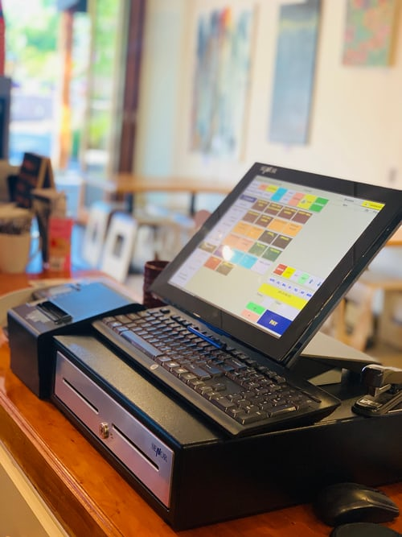

The point of sale or point of purchase is the time and place where a retail transaction is completed.
At the point of sale, the merchant calculates the amount owed by the customer, indicates that amount,
may prepare an invoice for the customer, and indicates the options for the customer to make payment.
Appointment scheduling software or meeting scheduling tools allows businesses and professionals to
manage appointments and bookings. This type of software is also known as appointment booking software
and online booking software.
Inventory management software is a software system for tracking inventory levels, orders, sales and
deliveries. It can also be used in the manufacturing industry to create a work order, bill of materials
and other production-related documents.